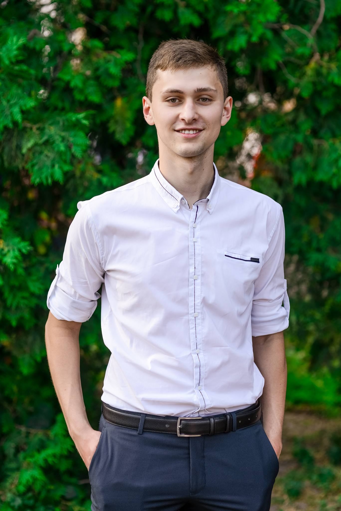

Maksym Smetana
 Planck was born in Kiel, Holstein, to Johann Julius Wilhelm Planck and his second wife, Emma Patzig. He was baptized with the name of Karl Ernst Ludwig Marx Planck; of his given names, Marx (a now obsolete variant of Markus or maybe simply an error for Max, which is actually short for Maximilian) was indicated as the "appellation name".[4] However, by the age of ten he signed with the name Max and used this for the rest of his life.[5] He was the 6th child in the family, though two of his siblings were from his father's first marriage. Among his earliest memories was the marching of Prussian and Austrian troops into Kiel during the Second Schleswig War in 1864. In 1867 the family moved to Munich and Planck enrolled in the Maximilians gymnasium school, where he came under the tutelage of Hermann Müller, a mathematician who took an interest in the youth, and taught him astronomy and mechanics as well as mathematics. It was from Müller that Planck first learned the principle of conservation of energy. Planck graduated early, at the age 17.[6] This is how Planck first came in contact with the field of physics.Planck was gifted when it came to music. He took singing lessons and played piano, organ and cello, and composed songs and operas. However, instead of music he chose to study physics.
The Munich physics professor Philipp von Jolly advised Planck against going into physics, saying, "in this field, almost everything is already discovered, and all that remains is to fill a few holes."[7] Planck replied that he did not wish to discover new things, but only to understand the known fundamentals of the field, and so began his studies in 1874 at the University of Munich. Under Jolly's supervision, Planck performed the only experiments of his scientific career, studying the diffusion of hydrogen through heated platinum, but transferred to theoretical physics.